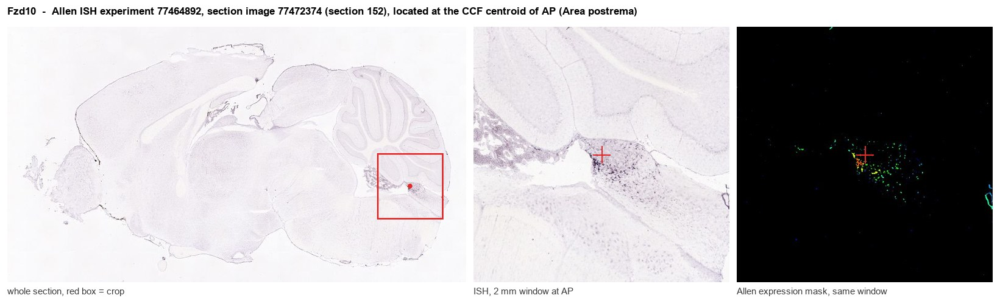
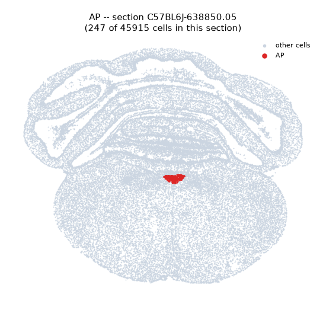
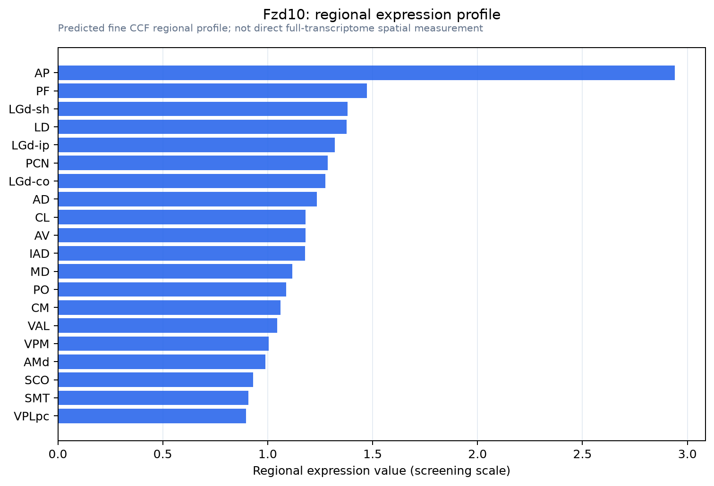

Fzd10
Frizzled-10 (Fz-10) (CD antigen CD350)
Spatial tier: REGION_BIASED · Class: GPCR · Top region: AP (Area postrema) · Positive regions: 32/554
47.5Discovery Score
41.9Targetability Score
CEvidence grade C
What this means: Fzd10: fine CCF profile is region-biased toward AP (top regions: AP, PF, LGd-sh, LD, LGd-ip); this is a discovery lead, not direct proof.
Function in AP: evidence, prediction, innovation
- Gene function
- FZD10 is one of ten Frizzled-family seven-transmembrane Wnt receptors. With LRP5/6 it converts Wnt binding into canonical beta-catenin-dependent transcription, and it also couples to Galpha12/13 to drive cytoskeletal remodelling and YAP/TAZ activity. In the embryo it controls neural progenitor proliferation and dorsal neuron specification downstream of Wnt1.
- Region function
- The area postrema is a circumventricular organ in the dorsal medulla whose fenestrated capillaries let it sample blood-borne GDF15, amylin, GLP-1 and toxins. Its excitatory neurons project to the NTS and parabrachial nucleus to drive nausea, emesis, conditioned taste aversion and anorexia.
- Published in this region
- none No region-specific literature found. Yan et al. 2009 found Frizzled10 mRNA strongly expressed at E10.5 in the fourth-ventricle neuroepithelium, the germinal zone from which the AP arises, with adult signal restricted to the internal capsule.
- Predicted function
- Prediction: in adult AP, Fzd10 most plausibly marks the residual Wnt-responsive ventricular-zone lineage, the tanycyte-like ependyma lining the AP surface, rather than Gfral/Calcr nausea neurons, sustaining the Wnt tone that maintains the blood-CSF interface. Conditional Fzd10 loss or porcupine inhibition should thin this ependymal layer and indirectly blunt responses to circulating GDF15 or amylin, leaving acute neuronal excitability intact.
- Innovation
- ★★★★★ 5/5 Fzd10 has no adult hindbrain literature at all, yet the AP is a tractable, therapeutically hot nucleus with published single-nucleus atlases and AAV access.
- Tools
- No Fzd10-Cre or -Flp driver known. Anti-FZD10 monoclonal OTSA101 for protein detection; Allen ISH probes; pathway reagents (porcupine inhibitor LGK974, Wnt surrogate agonists, DKK1); AAV-shRNA with stereotaxic AP targeting.
- References
Direct evidence located at the region

Allen ISH experiment 77464892, section image 77472374 (section 152): the section that contains the CCF centroid of Area postrema according to the Allen image-to-atlas alignment (reference_to_image), with a 2 mm window around that point. Left: whole section, red box = window. Middle: ISH signal. Right: Allen's expression-mask view of the same window. open this image in the Allen viewer
Look it up yourself: Allen Mouse Brain ISH for Fzd10Allen reference atlas: AP (structure 207)ABC Atlas MERFISH viewer(in the ABC Atlas choose dataset MERFISH-C57BL6J-638850-CCF, colour cells by gene "Fzd10" or by parcellation_substructure "AP")All genes confined to AP + 3-D brain
Direct spatial evidence
MERFISH REGION LOCATOR

Regional expression figure

Predicted WMB × fine-CCF profile; not direct full-transcriptome spatial measurement.
Spatial profile
Evidence and specificity
- Evidence status
- PREDICTED_FINE
- Direct sources
- None; predicted localization only
- Exclusive threshold
- 12 positive regions out of 554
- Spatial specificity
- 0.343
- Top-region fraction
- 0.071
- Filter status
- PASS
Interpretation limits
- Cell-type-to-region projection is imputed expression, not direct spatial measurement.
- Adult reference atlases do not establish stability across age, sex, strain, state, or disease.
- Transcript abundance does not guarantee protein abundance or genetic-tool performance.